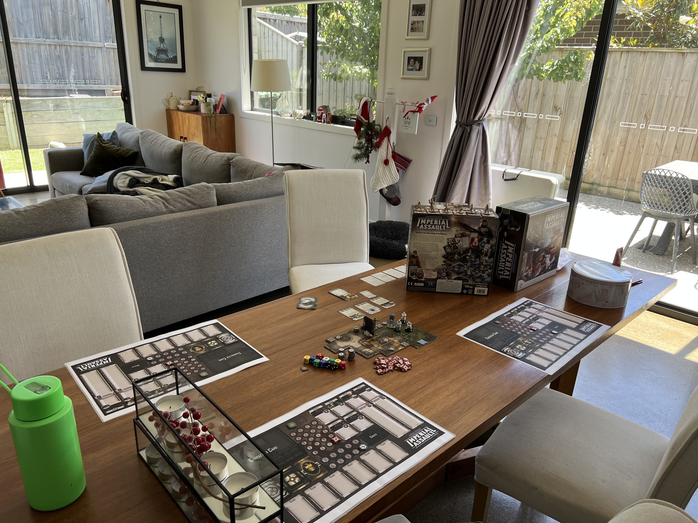
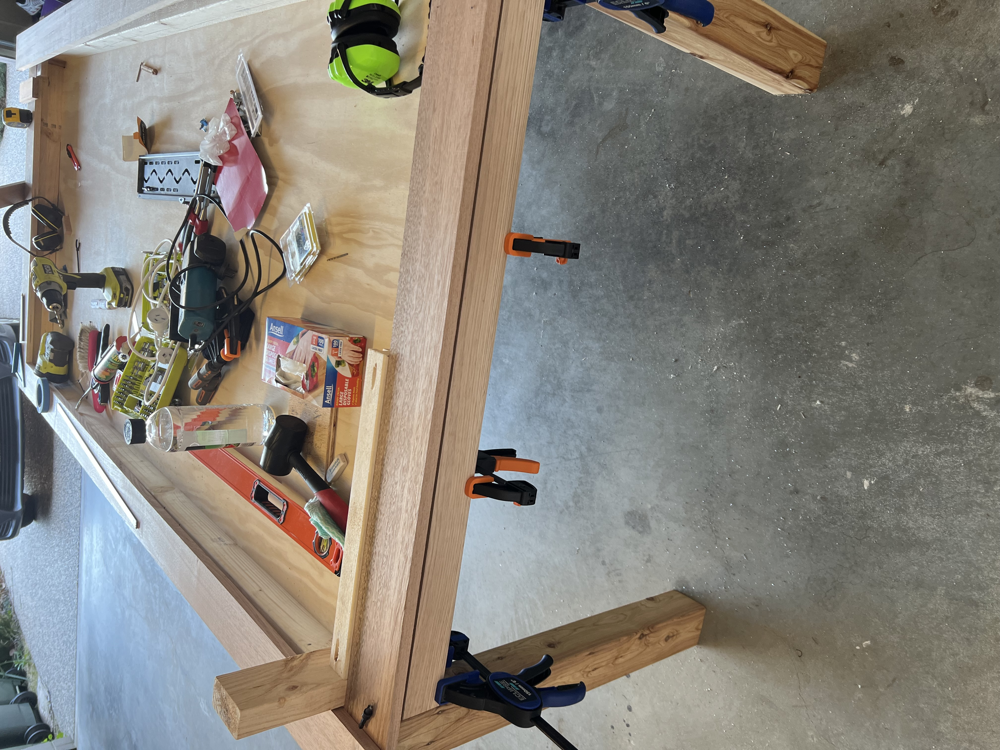

Who am I?
Work history
-
Digital Optimisation Lead
(Current Role)
-
Lending Education & Capability Manager
-
Lending Support Lead
-
Business Support Team Leader (COVID response)
-
Local Business Manager
-
Assistant Branch Manager
Highlights:
I currently work at Bendigo Adelaide Bank as a Product Lead - Digital Optimisation, in this role I am the product manager for our DocuSign platform.
I am responsible for:
-
Organisation Administration
-
Building new DocuSign templates
-
Working with Business units to automate processes
-
Building and Generating reports on use and benefit for senior leadership
I have been in this role since July 2022.
While at present what I work with is low-code (MS Power Automate, DocuSign Document Generation) I have been interested in learning what I can about potential integrations with other systems.
If you're interested you can find my resume here:

Personal
My Hobbies include:
-
Video Games
-
Board Games
-
Woodworking
I have just finished building my first "project" in woodworking, being a board game dining table.
This is a table that has removable leafs that are inset to the table to have a solid top, and when removed provides an recessed felt covered game table.
I have recently been playing the board game ROOT with my wife, other favourites include Unfair, Lords of Waterdeep, Dune and Star Wars: Imperial Assault